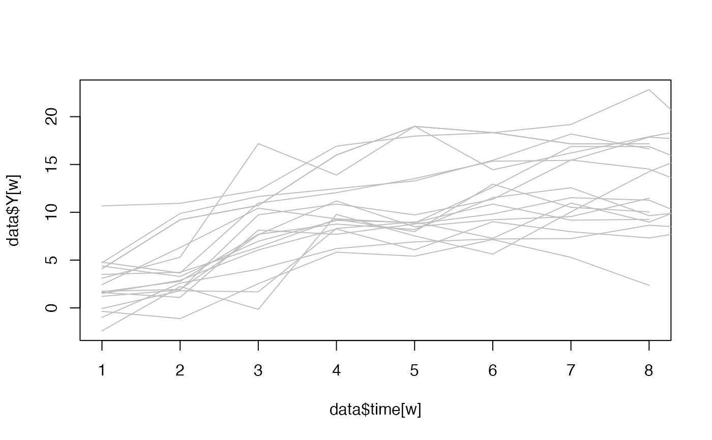
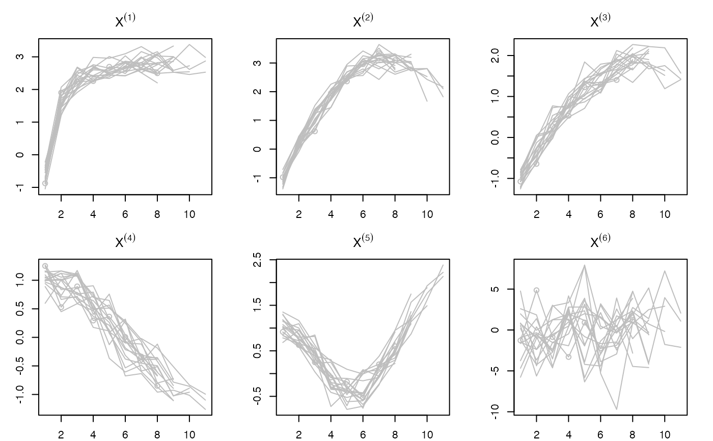

Longitudinal data generator
DataLongGenerator.RdSimulate longitudinal data according to the semi-parametric stochastic mixed-effects model given by: $$Y_i(t)=f(X_i(t))+Z_i(t)\beta_i + \omega_i(t)+\epsilon_i$$ with \(Y_i(t)\) the output at time \(t\) for the \(i\)th individual; \(X_i(t)\) the input predictors (fixed effects) at time \(t\) for the \(i\)th individual; \(Z_i(t)\) are the random effects at time \(t\) for the \(i\)th individual; \(\omega_i(t)\) is a Brownian motion with volatility \(\gamma^2=0.8\) at time \(t\) for the \(i\)th individual; \(\epsilon_i\) is the residual error with variance \(\sigma^2=0.5\). The data are simulated according to the simulations in low dimensional in the low dimensional scheme of the paper doi:10.1177/0962280220946080
Value
a list of the following elements:
Y:vector of the output trajectories.X :matrix of the fixed-effects predictors.Z:matrix of the random-effects predictors.id:vector of the identifiers for each individual.time:vector the the time measurements for each individual.
Examples
oldpar <- par()
oldopt <- options()
data <- DataLongGenerator(n=17, p=6,G=6) # Generate the data
# Let's see the output :
w <- which(data$id==1)
plot(data$time[w],data$Y[w],type="l",ylim=c(min(data$Y),max(data$Y)), col="grey")
for (i in unique(data$id)){
w <- which(data$id==i)
lines(data$time[w],data$Y[w], col='grey')
}

# Let's see the fixed effects predictors:
par(mfrow=c(2,3), mar=c(2,3,3,2))
for (i in 1:ncol(data$X)){
w <- which(data$id==1)
plot(data$time[w],data$X[w,i], col="grey",ylim=c(min(data$X[,i]),
max(data$X[,i])),xlim=c(1,max(data$time)),main=latex2exp::TeX(paste0("$X^{(",i,")}$")))
for (k in unique(data$id)){
w <- which(data$id==k)
lines(data$time[w],data$X[w,i], col="grey")
}
}

par(oldpar)
#> Warning: graphical parameter "cin" cannot be set
#> Warning: graphical parameter "cra" cannot be set
#> Warning: graphical parameter "csi" cannot be set
#> Warning: graphical parameter "cxy" cannot be set
#> Warning: graphical parameter "din" cannot be set
#> Warning: graphical parameter "page" cannot be set
options(oldopt)